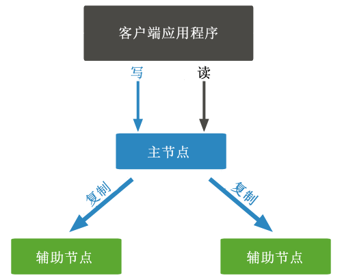

MongoDB复制（副本集）
MongoDB 中的复制就是跨多个服务器同步数据的过程，复制提供了数据的冗余备份，在多个服务器中存储数据副本，以此来提高数据的可用性，并可以保证数据的安全性。另外，复制还可以防止数据丢失，因为复制允许您从硬件故障或服务中断的过程中恢复数据。
下图展示了 MongoDB 复制的示意图，其中客户端应用程序始终与主节点交互，然后主节点将数据复制到辅助节点。
副本集功能：
为什么使用复制
下面列举了几个使用复制的好处：- 确保您数据的安全；
- 保障数据的高可用性；
- 数据恢复；
- 维护过程无需停机（例如备份、索引重建、压缩）；
- 分布式读取数据；
- 副本集对应用程序是透明的。
复制的工作方式
MongoDB 通过使用副本集来实现复制。副本集是一组托管相同数据集的 mongod 实例。在副本中，一个节点是接收所有写操作的主节点，其余的所有实例，例如第二实例，都将应用来自第一个实例的操作，以便它们具有相同的数据集。副本集只能有一个主节点。- 副本集是一组两个或更多节点（通常最少需要 3 个节点）；
- 在副本集中，一个节点是主要节点，其余节点是从节点；
- 所有数据从主节点复制到从节点；
- 在自动故障转移或维护时，将为主节点建立选举，并选举一个新的主节点；
- 恢复失败的节点后，它再次加入副本集并用作辅助节点。
下图展示了 MongoDB 复制的示意图，其中客户端应用程序始终与主节点交互，然后主节点将数据复制到辅助节点。

图：MongoDB复制示意图
图：MongoDB复制示意图
副本集功能：
- N 个节点的集群
- 任何一个节点都可以是主节点
- 所有写操作都在主节点上
- 自动故障转移
- 自动恢复
- 初选协商一致选举
设置副本集
接下来我们来看一下如何将独立的 MongoDB 实例转换为副本集。要转换为副本集，需要按照以下几个步骤操作：- 关闭正在运行的 MongoDB 服务器；
- 通过指定 --replSet 选项启动 MongoDB 服务器，--replSet 的基本语法如下所示：
mongod --port "PORT" --dbpath "YOUR_DB_DATA_PATH" --replSet "REPLICA_SET_INSTANCE_NAME"
【示例】在 27017 端口上启动名为 rs0 的 mongod 实例：mongod --port 27017 --dbpath "D:\set up\mongodb\data" --replSet rs0
现在启动命令提示符并连接到此 mongod 实例，在Mongo客户端中，请使用 rs.initiate() 命令来启动新的副本集。要检查副本集配置，请使用 rs.conf() 命令。要检查副本集的状态，请使用 rs.status() 命令。将成员添加到副本集
要将成员添加到副本集，需要在多台计算机上启动 mongod 实例。现在使用 rs.add() 命令来启动一个 mongo 客户端，rs.add() 命令的基本语法如下：>rs.add(HOST_NAME:PORT)
【示例】假设您的 mongod 实例名称为 mongod1.net，并且它运行在 27017 端口上。要将此实例添加到副本集，需要在 Mongo 客户端中使用 rs.add() 命令。>rs.add("mongod1.net:27017")
仅当连接到主节点时，才能将 mongod 实例添加到副本集。要检查您是否连接到主服务器，可以在 mongo 客户端中使用 db.isMaster() 命令。关注公众号「站长严长生」，在手机上阅读所有教程，随时随地都能学习。内含一款搜索神器，免费下载全网书籍和视频。

微信扫码关注公众号